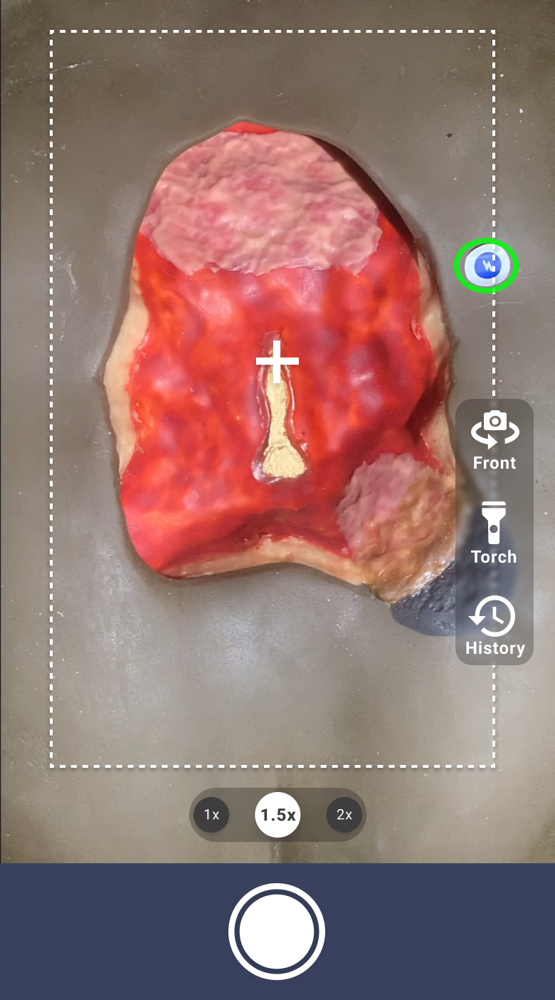
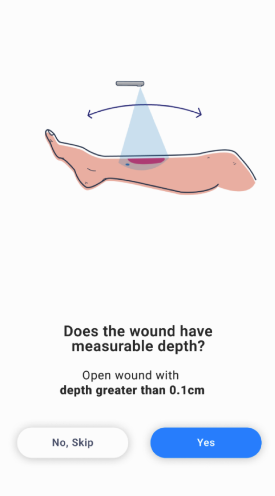
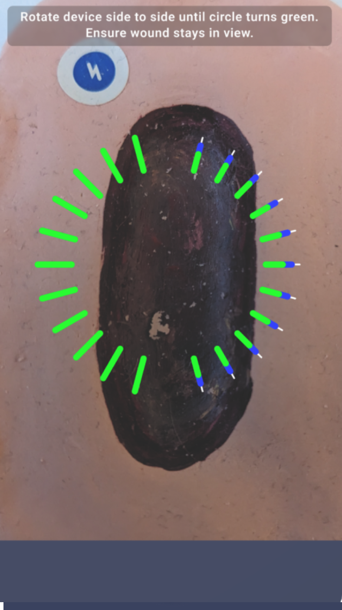
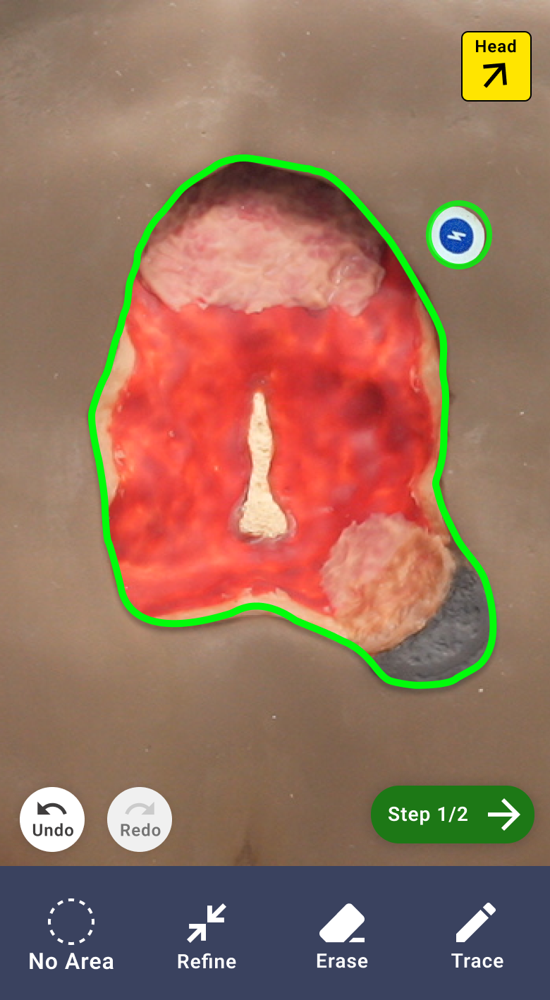
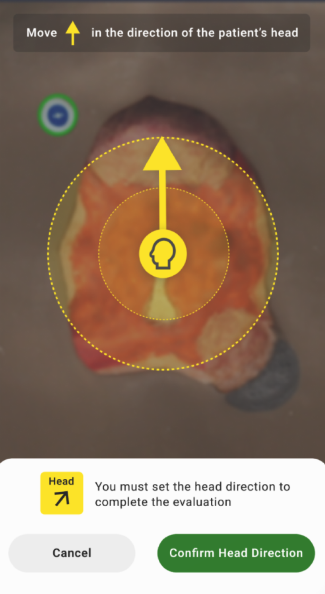
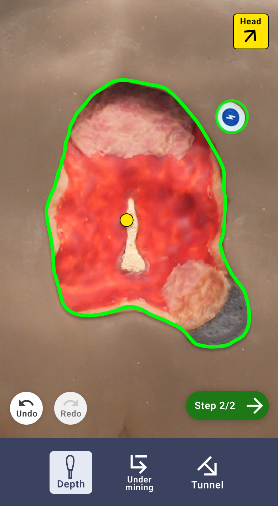
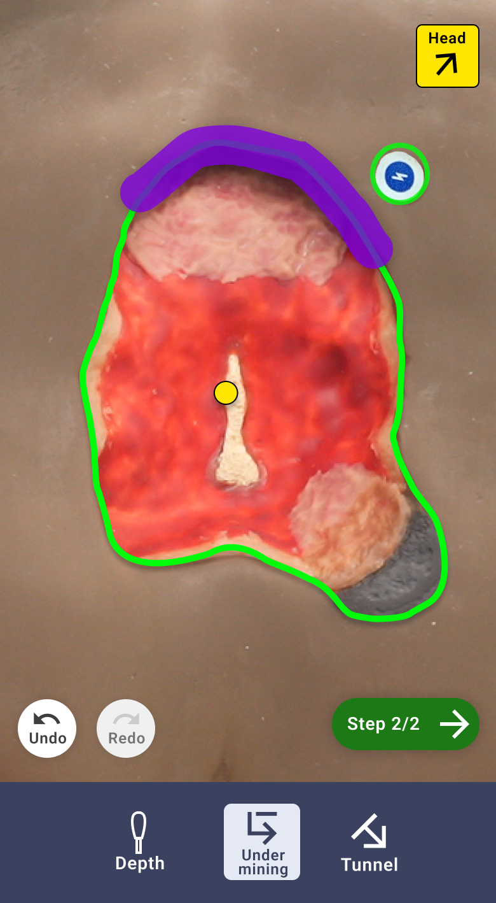
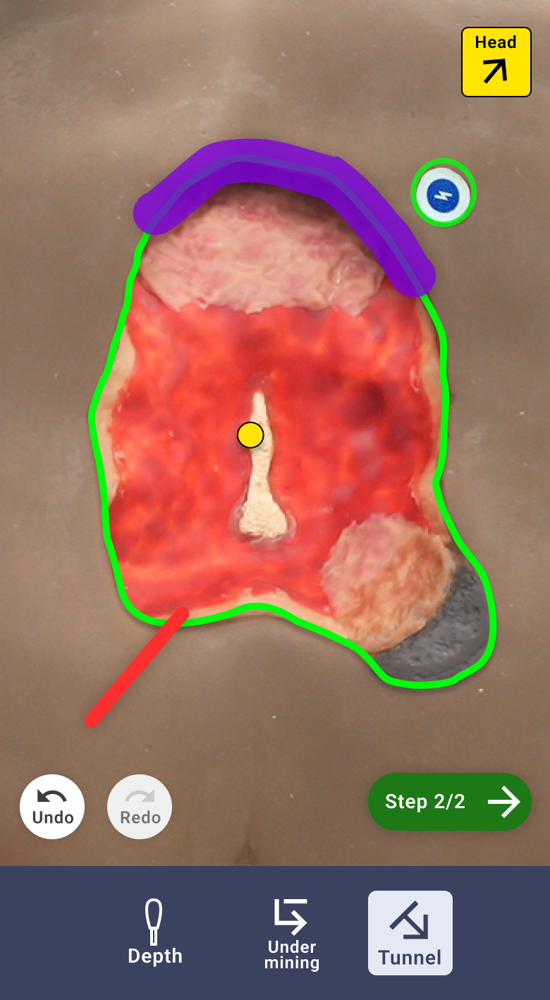
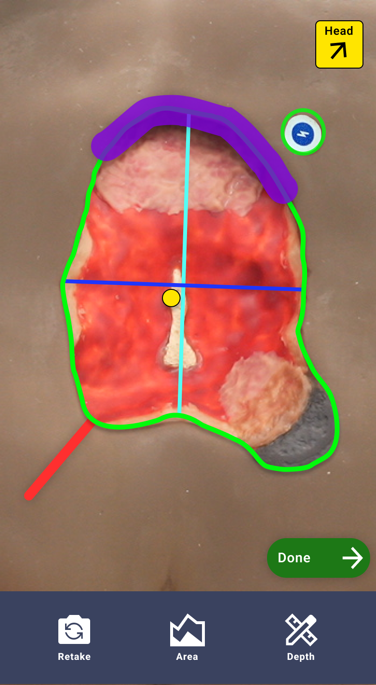

Instructions for Use
Capturing Wound Images
- Place a Swift HealX marker on intact skin, adjacent to the patient’s wound.
- From the Swift Skin and Wound camera screen, position the smartphone above the wound. A
green overlay will "find" and position itself over the Swift HealX.
- If necessary, tap anywhere on the screen to focus the image. You can tap as many times
as necessary until you are happy with the focus.
(Optional) Depending on the lighting levels in the room, you can tap the torch icon to
turn the flashlight on.
- Tap the shutter button at the bottom center of the screen. Swift Skin and Wound captures
an image of the wound and takes you to the Area screen.
- The History tool will allow you to see a photo of the previous evaluation.

Autodepth
Swift’s AutoDepth, an automated, non-contact method, allows for measurement of wound depth
using the everyday smartphone. Not all organizations have AutoDepth enabled at a base level.
You will not be able to use both AutoDepth and the Swift Ray 1 during the same evaluation.
You can’t use autodepth with the front facing camera.
Using Autodepth
When starting the Autodepth workflow you will be asked if the wound you are evaluating has
measureable depth (a wound with greater depth than 0.1cm)

- If the wound with no measureable depth, tap no to start an evaluation with manual
depth
- If the wound has depth, tap Yes.
After tapping yes, the Autodepth capture begins. To ensure that the Autodepth is captured
correctly, please follow these steps:
- Keep the wound in the center and moving the device to the left or right.
- Tilt and shift the device until a section of the white lines turn green.
- Return back to a center position. You should keep the wound centered at all times.
- Repeat until all sections turn green and a checkmark appears.

Area Screen
Once the wound image is captured, the next step is to add clinical information about the
wound. This is done quickly and easily at the point-of-care, making charting fast and
efficient.
Defining the wound area:
From the Area screen, use your finger to trace the outline of the wound. A green overlay
will be displayed over the wound. Pinch to zoom in for a more detailed trace
Tap Refine. The green overlay "snaps" around the wound image. Use the slider to find a
refine level that you're satisfied with.
Tap the Erase icon and scrub out parts you don't want or tap the Trace icon and circle the
area you want to add.
When you're satisfied, tap Done to transition to the Depth screen.

Setting the Head Direction
The head direction is required to complete an evaluation
- To set the head-to-toe orientation, select the Head-to-Toe icon at the top right hand
of the screen. Tap in the yellow circle to move the arrowhead on your screen to indicate
where the patient’s head is, relative to the wound.
- Tap the Confirm Head Direction button when you’re done.

Wound Measurements
There are several key wound measurements you can include in your evaluations. The Swift Skin
and Wound application is able to automatically calculate the values of multiple measurements
but some need to be manually entered into your documentation.
Adding wound depth, undermining and tunnelling
Adding wound depth(s):
- Tap the Depth icon.
- Tap the position on the wound image where you want to document depth. A yellow dot
appears indicating the spot where you are taking the depth measurement.
- Enter the depth in centimeters and tap Save.
- Repeat the previous step as many times as needed in order to enter multiple depth
measurements.
- Tap Done. The depth has measurement is added.
*If you completed AutoDepth, the depth measurement will appear here automatically.

Adding Undermining
- If there is undermining present, tap the Undermining icon.
- Use your finger to draw a line – not circle – on the border of the wound where the
undermining is. When you lift your finger, you’re prompted to enter the undermining
depth.
- Enter the undermining depth in centimetres and tap Save.
- Repeat steps 2 and 3 until you have indicated all the areas of undermining.
- Tap Done. The Undermining measurement is added.

Adding Tunnelling
- If there is tunnelling present, tap the Tunnelling icon.
- Use your finger to draw the tunnel on the wound. Draw in a straight line – not a circle
– starting from the inside of the wound and cutting across the wound border to indicate
the direction of the tunnel. When you lift your finger, you’ll be prompted to enter the
depth of the tunnelling.
- Enter the tunnel depth in centimetres and tap Save.
- Repeat steps 2 and 3 until you have indicated all the areas of tunnelling.
- Tap Done. The tunnelling measurement is added.
Once all Depth, Undermining and Tunnelling measurement have been captured, you can tap the Step
2/2 button and move to the Measurement screen.

Measurement Screen
The measurement screen gives you an opportunity to review the evaluation before proceeding to
the Evaluation Summary. From here, you can go back retake the photo, edit the trace on the
Area Screen, or go back to the Depth screen to edit your Depth, Undermining and Tunnelling
measurements.
If you are satisfied with the photo, area and measurements, tap the Done button.
